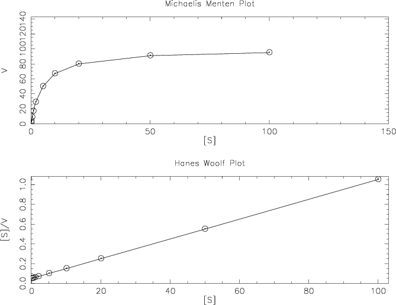

|
|
findkm |
Please help by correcting and extending the Wiki pages.
findkm reads a file of enzymatic reaction data (substrate concentration [S] versus reaction velocity [V]) and draws Michaelis Menten and Hanes Woolf plots of the data. From these it calculates the Michaelis Menten constant (Km) and the maximum velocity (Vmax) of the reaction. An output file with all relevant data is written.
% findkm -graph cps Calculate and plot enzyme reaction data Enzyme kinetics data (application-specific) file: enztest.dat Output file [enztest.findkm]: Created findkm.ps |
Go to the input files for this example
Go to the output files for this example
Standard (Mandatory) qualifiers:
[-infile] infile Enzyme kinetics data (application-specific)
file
[-outfile] outfile [*.findkm] Output file name
-graphlb xygraph [$EMBOSS_GRAPHICS value, or x11] Graph type
(ps, hpgl, hp7470, hp7580, meta, cps, x11,
tekt, tek, none, data, das, xterm, png, gif)
Additional (Optional) qualifiers: (none)
Advanced (Unprompted) qualifiers:
-[no]plot boolean [Y] S/V vs S
Associated qualifiers:
"-outfile" associated qualifiers
-odirectory2 string Output directory
"-graphlb" associated qualifiers
-gprompt boolean Graph prompting
-gdesc string Graph description
-gtitle string Graph title
-gsubtitle string Graph subtitle
-gxtitle string Graph x axis title
-gytitle string Graph y axis title
-goutfile string Output file for non interactive displays
-gdirectory string Output directory
General qualifiers:
-auto boolean Turn off prompts
-stdout boolean Write first file to standard output
-filter boolean Read first file from standard input, write
first file to standard output
-options boolean Prompt for standard and additional values
-debug boolean Write debug output to program.dbg
-verbose boolean Report some/full command line options
-help boolean Report command line options. More
information on associated and general
qualifiers can be found with -help -verbose
-warning boolean Report warnings
-error boolean Report errors
-fatal boolean Report fatal errors
-die boolean Report dying program messages
|
| Standard (Mandatory) qualifiers | Allowed values | Default | |
|---|---|---|---|
| [-infile] (Parameter 1) |
Enzyme kinetics data (application-specific) file | Input file | Required |
| [-outfile] (Parameter 2) |
Output file name | Output file | <*>.findkm |
| -graphlb | Graph type | EMBOSS has a list of known devices, including ps, hpgl, hp7470, hp7580, meta, cps, x11, tekt, tek, none, data, das, xterm, png, gif | EMBOSS_GRAPHICS value, or x11 |
| Additional (Optional) qualifiers | Allowed values | Default | |
| (none) | |||
| Advanced (Unprompted) qualifiers | Allowed values | Default | |
| -[no]plot | S/V vs S | Boolean value Yes/No | Yes |
0.10 2 0.20 4 0.50 9 1.00 17 2.00 29 5.00 50 10.00 67 20.00 80 50.00 91 100.00 95 |
---Hanes Woolf Plot Calculations--- Slope of best fit line is a = 0.01 Coefficient in Eqn of line y = ma +b is b = 0.05 Where line cuts x axis = (-0.20, 0) Where line cuts y axis = (0, 0.05) Limit-point of graph for plot = (103.00, 1.08) Vmax = 99.70, Km = 4.894612 |

| Program name | Description |
|---|
This application was modified by
David Martin (dmartin © rfcgr.mrc.ac.uk)
Modified May 2000